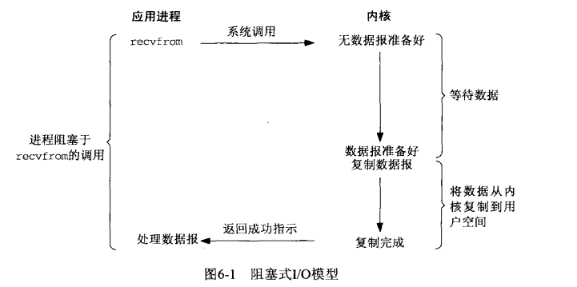
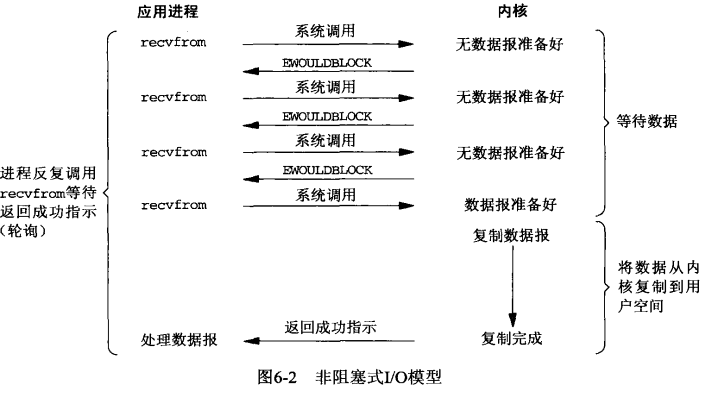
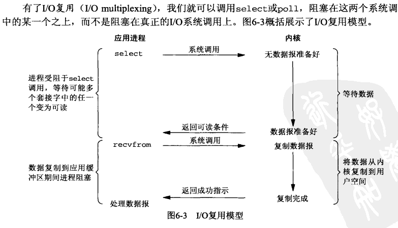
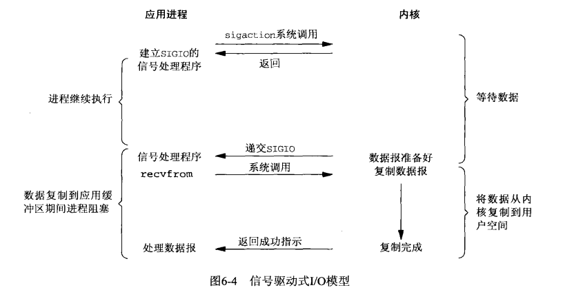
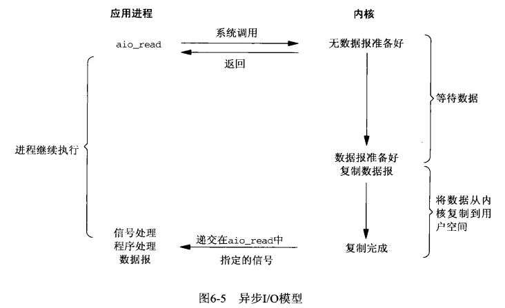

关于这两个概念， 感觉很难理解。 后来查找了一些文档， 一下是自己的理解。
要理解这两个概念， 首先应该以每个场景抽象出解释， 然后对应常用的情况进行落地，这样应该就比较扎实了。
理解到最后， 其实概念本身显得不是那么重要的， 而什么重要呢， 就是现实中应用的场景重要。
- 从场景入手
理解这几个概念不能离开问题的场景以及主体， 也离不开阶段。
- 比如抽象一个简单的场景， A 去查询B。 B 可以是文件， 网络， 或者别的资源。 A可以理解是线程。
- 所谓阻塞非阻塞， 是针对调用方而言的， 也就是A。 如果A需要等在这里， 就是阻塞的。 如果A可以去做别的， 就是非阻塞的。 而至于A是过会过来轮询拿到结果呢， 还是B有了结果通知老张可以拿呢， A都是非阻塞的。
注意一点， 如果B通知了A， A回来拿结果， 直接就拿走了。 对于A而言这个过程又是同步的。 所以我们说同步异步要看哪个阶段还是总体。 一般而言我们说的是整个过程。
同步异步， 说的是B。 这点可能还需要思考。 是B还是这个过程。对于B而言， 如果A发了消息等在这里， 或者过段来查询， B 都是同步的。 而如果A发了消息就回去了， 要等B的通知。 那么就是异步的。
2 常用
- 同步阻塞。 如果A查询B， A 等着直到B 返回结果。 这就是常用的同步阻塞。
- 异步非阻塞。 如果A返回， 等着B的通知， 这就是异步非阻塞。
- 同步非阻塞。 如果A返回， 然后不断查询B 是否可以拿结果， 是同步非阻塞。
3 网络上的一个例子很形象。
from 知乎 https://www.zhihu.com/question/19732473
老张爱喝茶，废话不说，煮开水。
出场人物：老张，水壶两把（普通水壶，简称水壶；会响的水壶，简称响水壶）。
- 1 老张把水壶放到火上，立等水开。（同步阻塞）
- 老张觉得自己有点傻
- 2 老张把水壶放到火上，去客厅看电视，时不时去厨房看看水开没有。（同步非阻塞）
- 老张还是觉得自己有点傻，于是变高端了，买了把会响笛的那种水壶。水开之后，能大声发出嘀~~~~的噪音。
- 3 老张把响水壶放到火上，立等水开。（异步阻塞）
- 老张觉得这样傻等意义不大
- 4 老张把响水壶放到火上，去客厅看电视，水壶响之前不再去看它了，响了再去拿壶。（异步非阻塞）
老张觉得自己聪明了。
所谓同步异步，只是对于水壶而言。普通水壶，同步；响水壶，异步。虽然都能干活，但响水壶可以在自己完工之后，提示老张水开了。这是普通水壶所不能及的。- 同步只能让调用者去轮询自己（情况2中），造成老张效率的低下。
- 所谓阻塞非阻塞，仅仅对于老张而言。立等的老张，阻塞；看电视的老张，非阻塞- 情况1和情况3中老张就是阻塞的，媳妇喊他都不知道。虽然3中响水壶是异步的，可对于立等的老张没有太大的意义。所以一般异步是配合非阻塞使用的，这样才能发挥异步的效用。
- ——来源网络，作者不明。
- 再深一步cpu层面， 线程层面， 程序员层面
这几个概念，上面不少答案已经写得很清楚了。这里我结合自己的理解，简单地聊一下为什么这几个概念容易混淆。如果有错误之处，恳请批评指正。
我认为同步、异步、阻塞、非阻塞，是分3个层次的：
- CPU层次；
- 线程层次；
- 程序员感知层次。
这几个概念之所以容易混淆，是因为没有分清楚是在哪个层次进行讨论。
- CPU层次
在CPU层次，或者说操作系统进行IO和任务调度的层次，现代操作系统通常使用异步非阻塞方式进行IO（有少部分IO可能会使用同步非阻塞轮询），即发出IO请求之后，并不等待IO操作完成，而是继续执行下面的指令（非阻塞），IO操作和CPU指令互不干扰（异步），最后通过中断的方式来通知IO操作完成结果。 - 线程层次 – 一般说到这个层次可以
在线程层次，或者说操作系统调度单元的层次，操作系统为了减轻程序员的思考负担，将底层的异步非阻塞的IO方式进行封装，把相关系统调用（如read，write等）以同步的方式展现出来。然而，同步阻塞的IO会使线程挂起，同步非阻塞的IO会消耗CPU资源在轮询上。为了解决这一问题，就有3种思路：
多线程（同步阻塞）；
IO多路复用（select，poll，epoll）（同步非阻塞，严格地来讲，是把阻塞点改变了位置）；
直接暴露出异步的IO接口，如kernel-aio和IOCP（异步非阻塞）。
- 程序员感知层次
在Linux中，上面提到的第2种思路用得比较广泛，也是比较理想的解决方案。然而，直接使用select之类的接口，依然比较复杂，所以各种库和框架百花齐放，都试图对IO多路复用进行封装。此时，库和框架提供的API又可以选择是以同步的方式还是异步的方式来展现。如python的asyncio库中，就通过协程，提供了同步阻塞式的API；如node.js中，就通过回调函数，提供了异步非阻塞式的API。
总结
因此，我们在讨论同步、异步、阻塞、非阻塞时，必须先明确是在哪个层次进行讨论。比如node.js，我们可以说她在程序员感知层次提供了异步非阻塞的API，也可以说在Linux下，她在线程层次以同步非阻塞的epoll来实现。
所谓同步，是指调用协议中结果在调用完成时返回，这样调用的过程中参与双方都处于一个状态同步的过程。
而异步，是指调用方发出请求就立即返回，请求甚至可能还没到达接收方，比如说放到了某个缓冲区中，等待对方取走或者第三方转交；而结果，则通过接收方主动推送，或调用方轮询来得到。– 调用方轮询的时候–》
- 在网络编程的理解， 主要是内核态和用户态加入， 这个也是这个问题提出的重要场景
Unix网络编程第一本书， 第六章。
阻塞IO

非阻塞 IO 所以阻塞非阻塞还是看调用方， 是否可以作别的。 还是

IO 复用
这里呢对于每个而言其实都是阻塞的， 但是对整个事情而来可以说是非阻塞的。

- 信号驱动IO 模型
第一部分没有阻塞。 内核就去准备了。
准备好之后内核通知应用说准备好了。 -》 这里对调用方是异步。
然后应用进程去读， 是同步的， 但是这个时候数据准备好了已经。


- 异步IO 模型
- 异步IO 就是应用程序初始一个request， 然后内核会准备数据， 并且把数据拷贝到用户空间， 然后通知应用程序。
和信号驱动io的区别， 信号驱动是告诉你可以启动一个IO 操作， 异步则是告诉你做完了。

